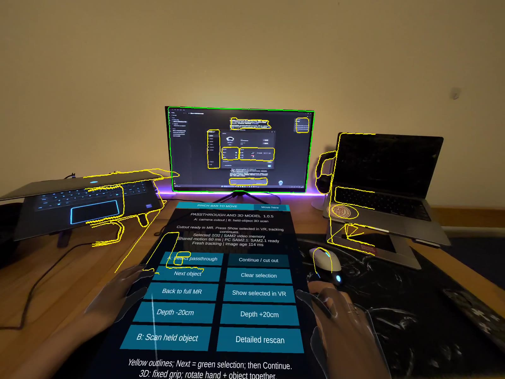
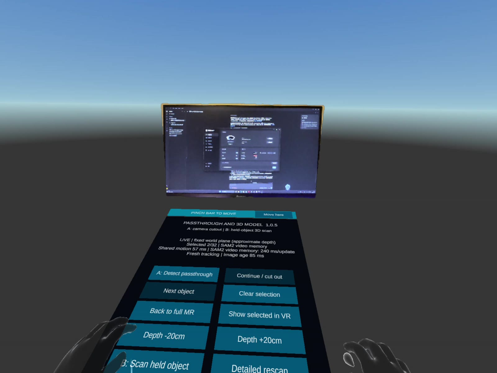
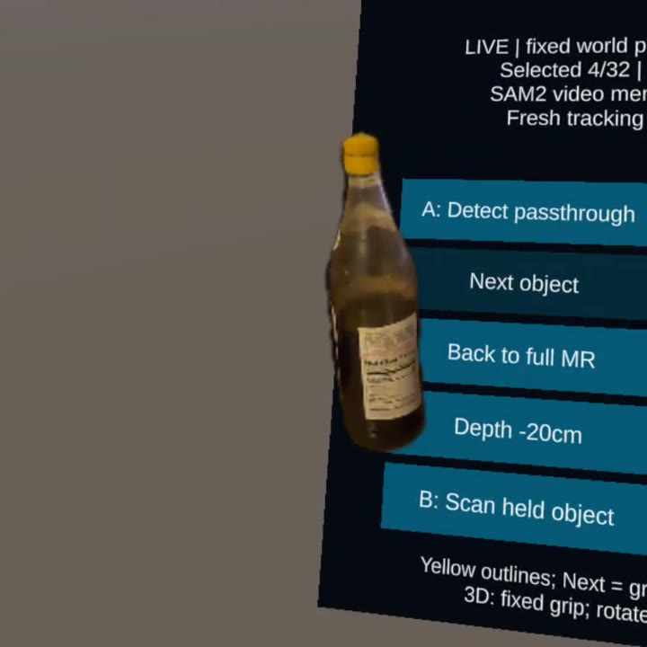

01 Detect
Outline everything.
SAM 2.1 returns contours for every object in the camera view (yellow), with no closed category list.
Stay in VR and keep only the real object you choose, segmented by SAM 2.1 on a tethered GPU.
A PICO camera frame goes over a private USB loopback link to a local SAM 2.1 service. The model proposes class-agnostic masks, the user picks one, and Unity rebuilds it from run-length encoding. Optical flow keeps the object between expensive segmentation calls, and the selected region is composited as a live cutout while the rest of the camera image is hidden. Visibility becomes an object-level choice instead of full VR or full MR.
Expensive mask initialisation is separated from low-latency continuity, so the headset never waits on SAM every frame.
The interaction is three steps; the last clip shows the same pipeline in a cluttered scene.
SAM 2.1 returns contours for every object in the camera view (yellow), with no closed category list.
The user cycles candidates; the chosen mask turns green and receives an independent short-term tracker.
The room becomes VR; the selected monitor stays as live passthrough, anchored in place.
Cans and cups inches away; only the bottle’s boundary is kept, label included.



Components named as in the Unity project and Python service.
| Part | Role |
|---|---|
| SAM 2.1 Hiera Large | Initial class-agnostic proposals; handles unfamiliar objects. |
| CUDA PyTorch service | Runs on the RTX 4060; keeps a large model off the headset but local. |
| Optical flow | Short-term mask propagation so SAM is not rerun every frame. |
| RLE mask protocol | Small payload, deterministic reconstruction in Unity. |
| Unity custom shaders | Mask-based camera compositing and outlines. |
| USB ADB reverse | No LAN discovery, no inbound firewall rules, no cloud upload. |